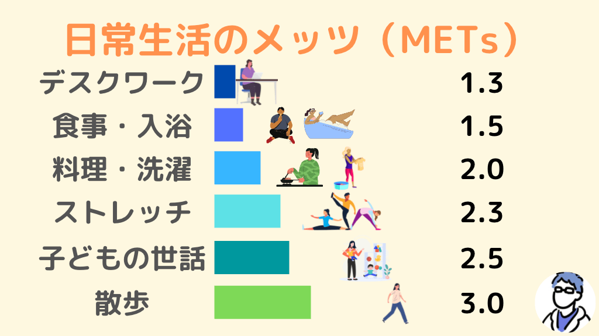

不動産広告の「徒歩◯分（80m/分）」を、勾配・階段・信号・荷重で補正して比較する。
起伏のある道は「登り/下り累計」を入れると往復一式で精度よく評価します。未入力なら高低差(net)を使用（＝登りのみ）。
出発地・目的地を直接入力して徒歩ルートを表示できます（未入力なら物件名→最寄駅で自動表示）。表示された距離を「駅までの道路距離」に手入力してください。
「比較表に追加」を押すと、算出データが匿名で集計用シートに記録されます。物件名などに個人情報は入力しないでください。

METs＝安静時の何倍の強度か。結果の「運動強度（往復平均）」と見比べる目安。
変更すると即座に再計算します。比較表に追加済みの行は追加時点の値で固定されます。
往復で評価：行きと帰りで上り下りが入れ替わるので、往復の総登り＝総下り＝V = 登り累計 + 下り累計（net高低差は相殺）。登り/下り累計を入れない場合は高低差(net)を登りのみとして扱う。
法定徒歩分数（片道）：不動産表示規約で 道路距離 ÷ 80m（端数切上げ）。広告の徒歩分の基準値。
運動強度 METs（往復平均）：ACSM歩行式の登り項を道のりで積分すると鉛直コストは累計標高だけで決まる。往復の総VO₂/kg = (0.1·S+3.5)·往復分 + 1.8·V·(1+0.06)、METs = 平均VO₂÷3.5。Sは速度(m/分)。平地80m/分で約3.3 METs。
体感分数（往復） = (法定往復 + V/10) × 荷重倍率 ＋ 待ち時間×2（V/10 はNaismith：+1分/10m昇）。荷重倍率＝ベビーカー×抱っこ×現地補正。階段は 段数 × 1段の高さ を登り累計に加算。
消費カロリー（往復） = (平地METs×体重×往復時間 + 鉛直VO₂×体重×0.005) × 荷重倍率。体重はここだけに効きます（体感分数・判定には無関係）。
コース定数（往復） = 1.8·往復時間(h) + 0.3·2D(km) + 10·V(km) + 0.6·V(km)。登山向けの式で短距離は登り項を過大評価しがちなので、絶対値より物件間の相対順位として使う。
下りは登りの6%の軽いコストとして簡略化。実際の登坂はこの数字より時間がかかる。判定バンドは往復平均METs×荷重倍率：〜3.5 楽 / 〜5 標準 / 〜6.5 ややきつい / それ以上 きつい。